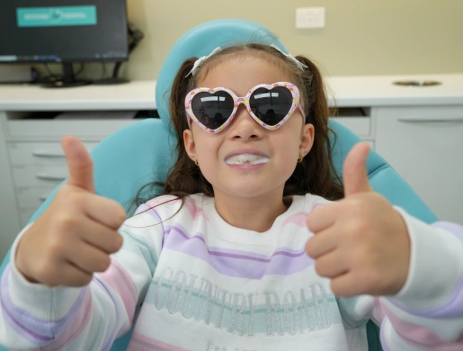

New patients
Your child’s first visit
At Beyond 32 Dental, our child-friendly team strives to provide your child with a positive dental experience by making visits both interactive and fun!


- From age 2when we recommend the first check-up
- Every 6 monthsregular check-ups after that
- Claim on the spotAll health funds accepted with HICAPS
- SaturdaysOpen 9am–3pm, as well as weekdays
Prevention is better than cure
We believe that prevention is better than cure, which is why we recommend children visit us for regular 6 monthly check-ups as early as 2 years of age.
-
As early as 2 years of age
Your child’s first check-up
-
Every 6 months
Regular check-ups and a positive attitude towards the dentist
-
Into adulthood
Good oral hygiene habits they can continue
Not only will this help foster a positive attitude towards coming to the dentist, regular attendance will help your child develop good oral hygiene habits that they can continue into adulthood.
A visit to the dentist can be fun!
- A thorough examinationA thorough examination is performed to detect any early decay and/or orthodontic concerns.
- Digital filmsThis will involve taking digital films.
- Perhaps a very gentle clean & polishOnly if any tartar or plaque is detected.
But don’t worry, because we’ll also make it fun and interactive for your child by playing their favourite movie on the screen right in front of the dental chair. Our professionally trained staff also enjoy working with children and bring a sense of fun to the children.

Getting ready at home
To prepare them for their first experience in the dental chair, we encourage parents to talk to their child about the upcoming dental visit. Reading dental books, watching movies and ‘role playing’ at home in preparation can be beneficial to build confidence in your child.
New to Beyond 32?
See what our new patient package includes, with pricing for every age.
See the welcome package →We claim your rebate on the spot with HICAPS, so you only pay the gap on the day.
Happy gas and in-house sedation are available for children and adults.
About in-house sedation →